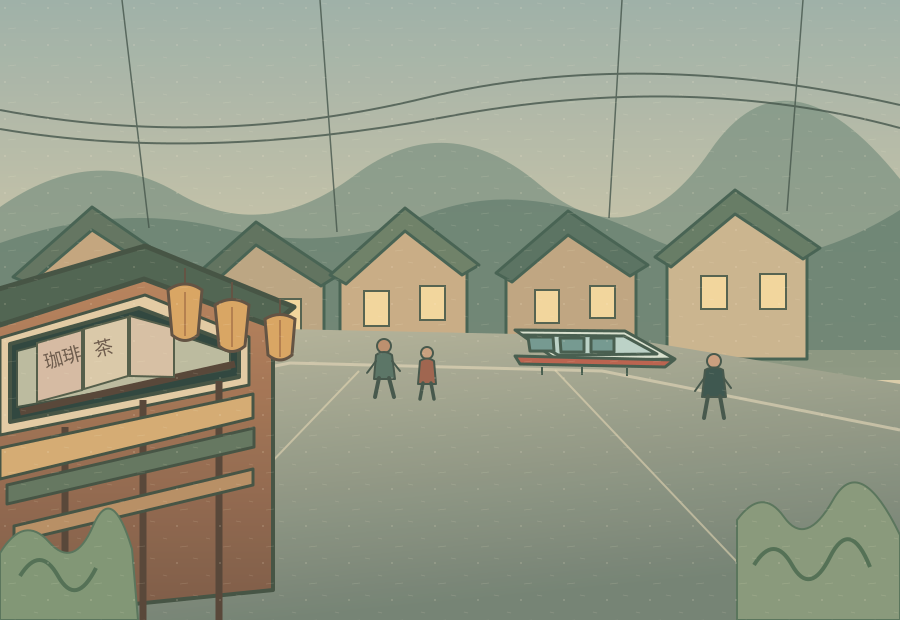

Hanasou
話そう
REAL JAPANESE
FOR REAL LIFE
Practical Japanese. Real conversations.
A more meaningful way to learn.
A little Japanese.
A whole new world.
Four ways to practice. One step closer to real conversation.

YOUR NEXT STOP · TOKYOThe neighborhood café
CONTINUE YOUR JOURNEYLevel 3 · Getting Around
Buying a ticket · 6 lessons
YOUR JOURNEY
⌖Explore Japan
From first words to real conversations
LEVEL 3
▤Getting Around
2新宿 渋谷SHINJUKU · SHIBUYA
● ● ● ● ●
Navigate the city with confidence.
6 lessons2 / 6
1. Recall
3 / 10A QUIET NEIGHBORHOOD CAFÉ
SAY IT IN JAPANESE
You want to order a coffee.
How would you say this in Japanese?
Try saying it out loud, then reveal the answer.
コーヒーをお願いします。Kōhī o onegaishimasu.
A coffee, please.
Listen carefully 1.0×
コーヒーを飲みます。コーヒー を のみます。
I drink coffee.
Change this sentence to past tense.
✓ 正解です！コーヒーを飲みました。I drank coffee.
ご注文は？Go-chūmon wa?
What would you like to order?
LESSON COMPLETE
よくできました！
You're getting closer to your next destination.
◉Recall8 / 10
◖))Listen & Notice7 / 10
✣Pattern Lab6 / 8
♧In the Moment4 / 6
YOUR JOURNEY
Your Progress
28%Complete
◉Recall8 / 10
◖))Listen & Notice7 / 10
✣Pattern Lab6 / 8
♧In the Moment4 / 6